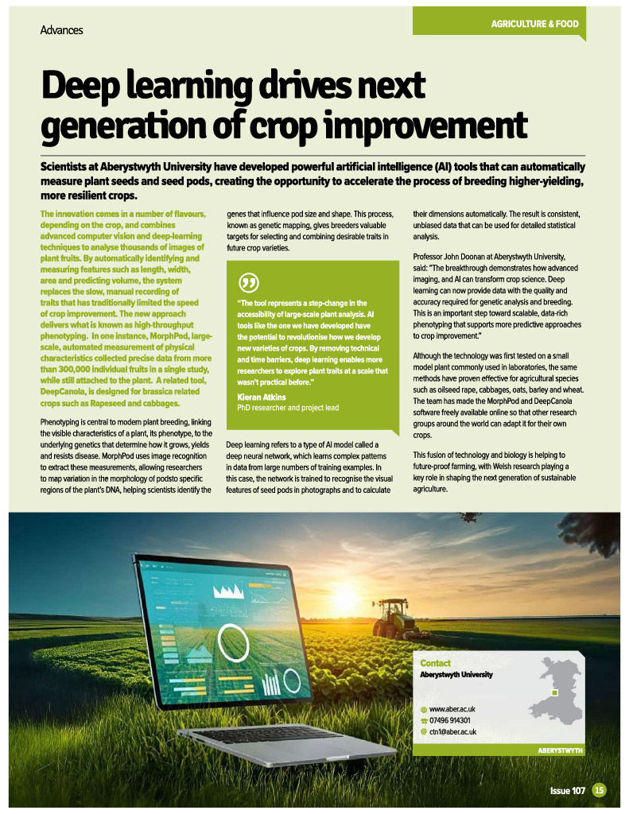

Dr. Kieran Atkins
Computer Vision and Deep Learning Researcher
Work email: kia10@aber.ac.uk
Personal email: kieran.atkins99@gmail.com


About Me
Computer vision and deep learning researcher specialising in AI-driven plant phenotyping and translating large-scale data into actionable insights. Experienced in architecting and delivering end-to-end deep learning pipelines, supported by strong critical analysis and problem-solving skills. Seeking to apply expertise in AI-driven image analysis and cross-disciplinary collaboration to address complex challenges in biological data science.
Publications
Unlocking the power of AI for phenotyping fruit morphology in Arabidopsis
GigaScience, Volume 14, 2025, giae123
AbstractDeep learning can revolutionise high-throughput image-based phenotyping by automating the measurement of complex traits, a task that is often labour-intensive, time-consuming, and prone to human error. However, its precision and adaptability in accurately phenotyping organ-level traits, such as fruit morphology, remain to be fully evaluated. Establishing the links between phenotypic and genotypic variation is essential for uncovering the genetic basis of traits and can also provide an orthologous test of pipeline effectiveness. In this study, we assess the efficacy of deep learning for measuring variation in fruit morphology in Arabidopsis using images from a multiparent advanced generation intercross (MAGIC) mapping family. We trained an instance segmentation model and developed a pipeline to phenotype Arabidopsis fruit morphology, based on the model outputs. Our model achieved strong performance with an average precision of 88.0% for detection and 55.9% for segmentation. Quantitative trait locus analysis of the derived phenotypic metrics of the MAGIC population identified significant loci associated with fruit morphology. This analysis, based on automated phenotyping of 332,194 individual fruits, underscores the capability of deep learning as a robust tool for phenotyping large populations. Our pipeline for quantifying pod morphological traits is scalable and provides high-quality phenotype data, facilitating genetic analysis and gene discovery, as well as advancing crop breeding research.
DeepCanola: Phenotyping brassica pods using semi-synthetic data and active learning
Computers and Electronics in Agriculture, Volume 220, 2025, 110470
AbstractPhenotyping, the measurement of attributes or traits, is crucial in selecting superior cultivars for specific environmental situations. This is a time-consuming process when applied to large populations but can be accelerated through the use of deep learning, resulting in an algorithm that can phenotype images of specimens in negligible amounts of time. The primary issue with deep learning is the large quantities of high-quality training data required to make a viable phenotyping pipeline. To address this, we present a semi-synthetic training data generation system which significantly reduces the amount of human effort spent on data collection. We use active learning alongside this system to create DeepCanola, an instance segmentation model that successfully segments and measures the valves from Brassica napus pods. We demonstrate that the model accurately estimates the effect of different winter cold treatments on a range of different cultivars and crop types as effectively as manually curated measurements. Furthermore, the resulting model is effective on data from various experimental settings and on different, but related, species such as Arabidopsis thaliana, Allaria petiolate (garlic mustard) and Raphanus raphanistrum subsp. sativus (radish). This robust tool could be easily scaled, thereby accelerating breeding or fundamental research programs. Code and model weights: https://github.com/kieranatkins/deepcanola.
Quantitative Phenotyping using Deep Learning
Doctoral thesis, 2025
AbstractPhenotyping, the process of measuring characteristics (often referred to as traits), is a cornerstone of modern crop breeding. The automation of phenotyping (known as phenomics) is crucial for accelerating research in the face of climate change and increased pest biodiversity. In image-based phenomics, classical computer vision (CV) and deep learning (DL) have been used successfully for image-level and enumerative traits. However, the automated collection of accurate quantitative trait data at the organ level has not yet been fully explored. Typically, classical CV algorithms often lack the robustness and consistency needed to capture complex traits in variable domains. Deep learning, however, can be limited by the cost of the training data necessary to build a robust model. Concerns also remain about DL accuracy when applied to genetic research. This thesis reports the training of novel DL models, the design of phenotyping pipelines to extract quantitative trait measurements via both traditional and generated training data; relating variation in the traits to variation in the genome, and the creation of a novel weakly supervised training system that pretrains networks to recognise plant morphology. Firstly, synthetic training data was used as part of an active learning system to successfully train a phenotyping model for isolated Brassica pods, starting from a small initial dataset. Secondly, a DL model and pipeline were developed to extract organ-level traits from images of entire Arabidopsis fruiting stems from a multi-parent advanced generation inter-cross (MAGIC) population and successfully relate the variability of these metrics to variability in the genome using QTL analysis. Finally, a novel pre-training system was designed that utilises weakly supervised training to recognise plant structure morphology, guided by classical computer vision pipeline. This system was demonstrated on a new collection of images of both crop and non-crop relatives to pre-train a base model for general plant organ detection, followed by fine-tuning with minimal training data for downstream measurements. This thesis contributes to the development and verification of AI pipelines, paving the way for more efficient (pre-)training systems in image-based plant phenotyping. These advancements offer the potential to scale up phenotyping, accelerating genetic research and plant breeding programmes.
Articles
Read more about my work in the following articles:
